Features, labels, logistic regression, overfitting, and how to measure a classifier
Many recent papers in epigenomics train a model to predict something: is this region open, is this site bound, how old is this blood sample. This unit teaches the ideas behind all of them, from scratch, with one running example: can we tell open from closed chromatin in GM12878 from the DNA sequence alone?
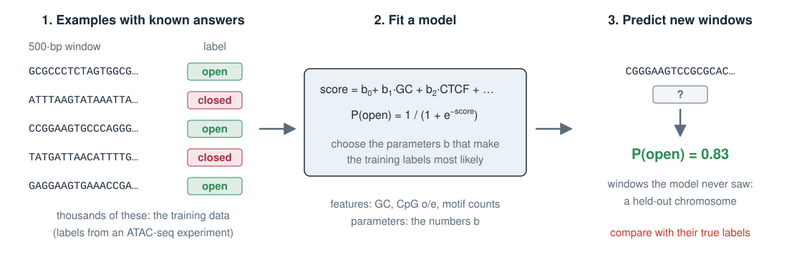
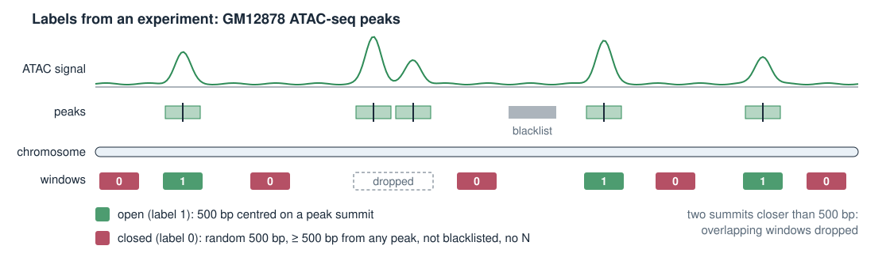
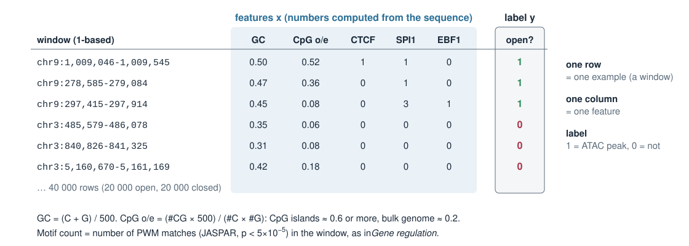
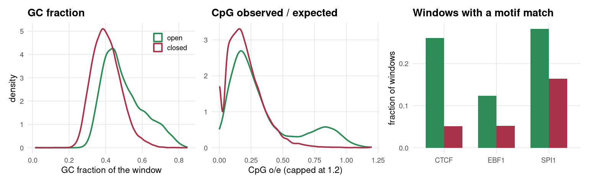
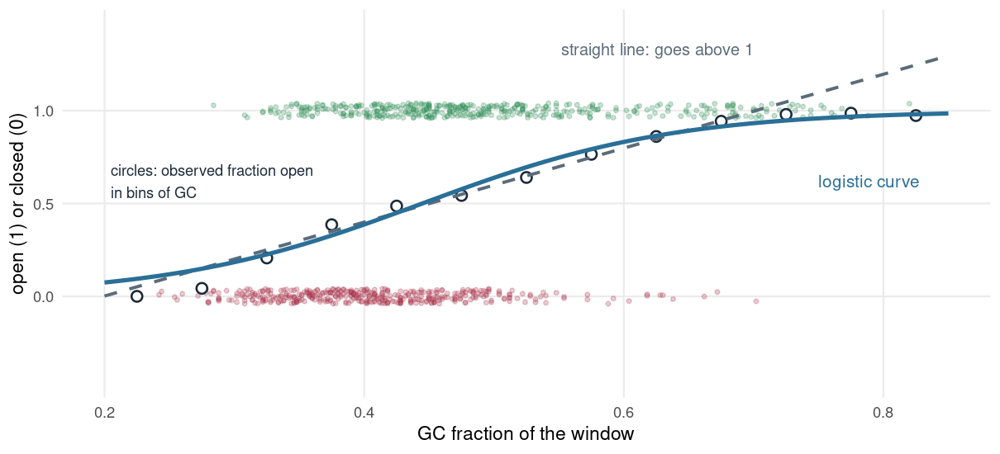
open ~ gc predicts values below 0 and above 1: not probabilities.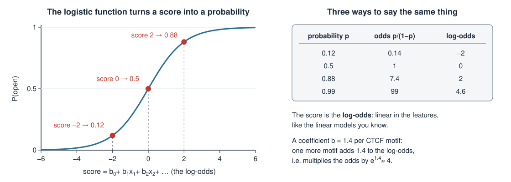
\text{score} = b_0 + b_1 x_1 + \dots + b_p x_p, \qquad P(\text{open}) = \frac{1}{1 + e^{-\text{score}}}
lm. The logistic function squeezes it into (0, 1).glm(open ~ gc + ..., family = binomial).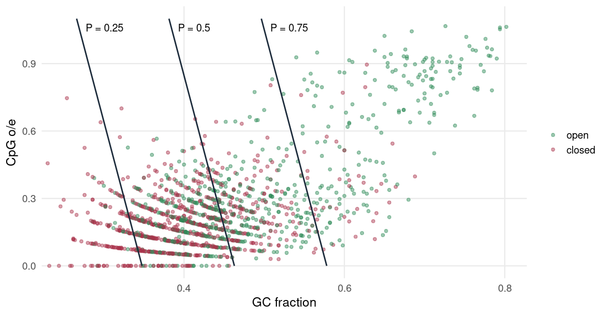
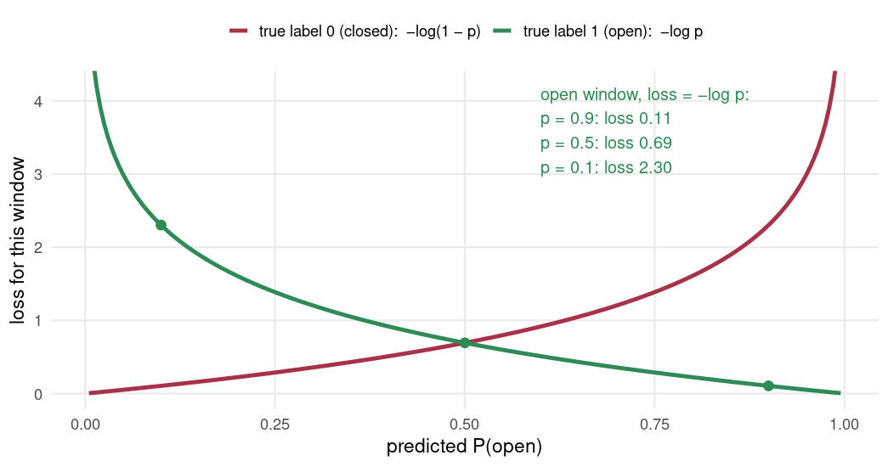
glm does.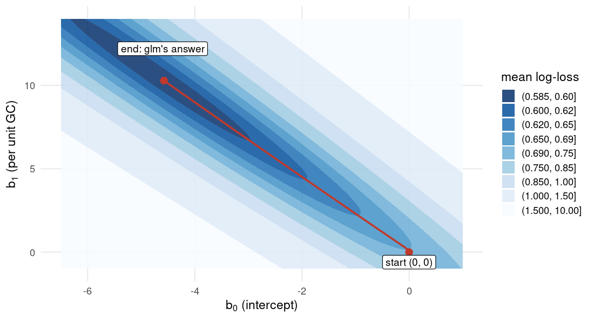
glm ends (−4.57, 10.28). Neural networks are fitted the same way, with millions of parameters.test <- dat$chrom %in% c("chr8", "chr9") # hold out two whole chromosomes
train <- dat[!test, ]; tst <- dat[test, ]
m <- glm(open ~ gc + cpg_oe + ctcf + spi1 + ebf1, family = binomial, data = train)
round(summary(m)$coefficients, 2)
# Estimate Std. Error z value Pr(>|z|)
# (Intercept) -4.20 0.07 -62.11 0
# gc 8.04 0.17 47.60 0
# cpg_oe 0.97 0.08 12.74 0
# ctcf 1.41 0.04 36.62 0
# spi1 0.60 0.02 26.18 0
# ebf1 0.24 0.03 8.06 0
p <- predict(m, newdata = tst, type = "response") # P(open) for unseen windows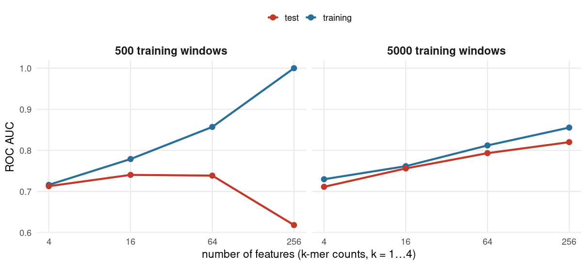
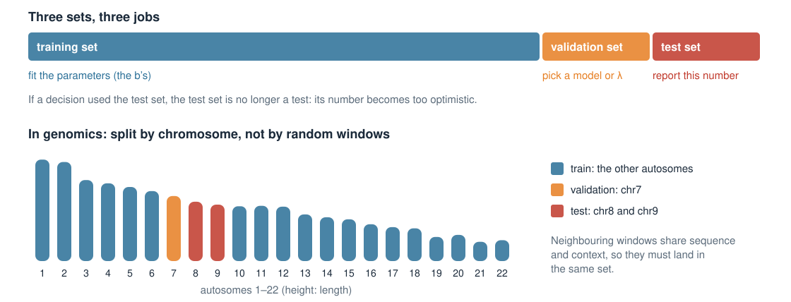
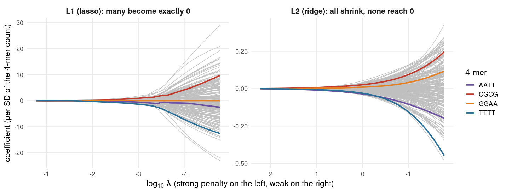
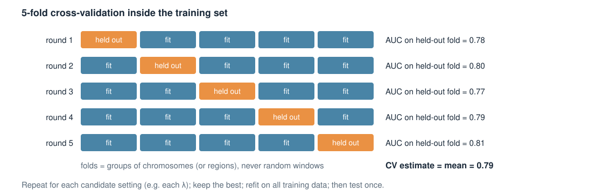
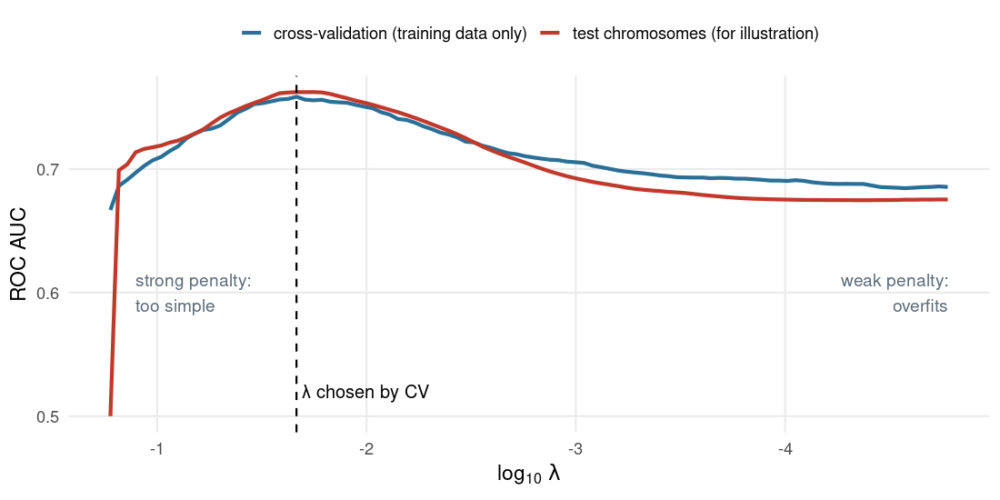
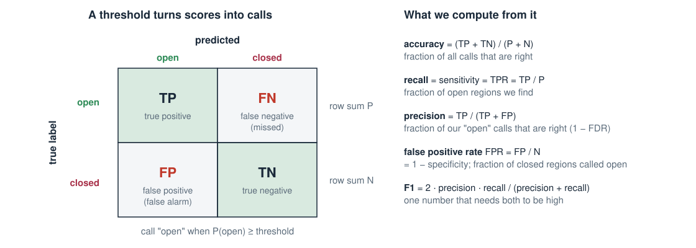
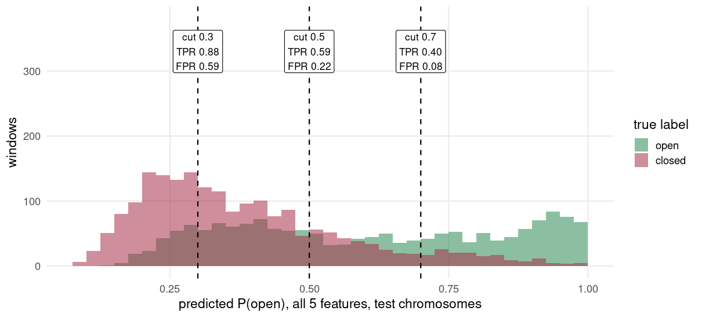
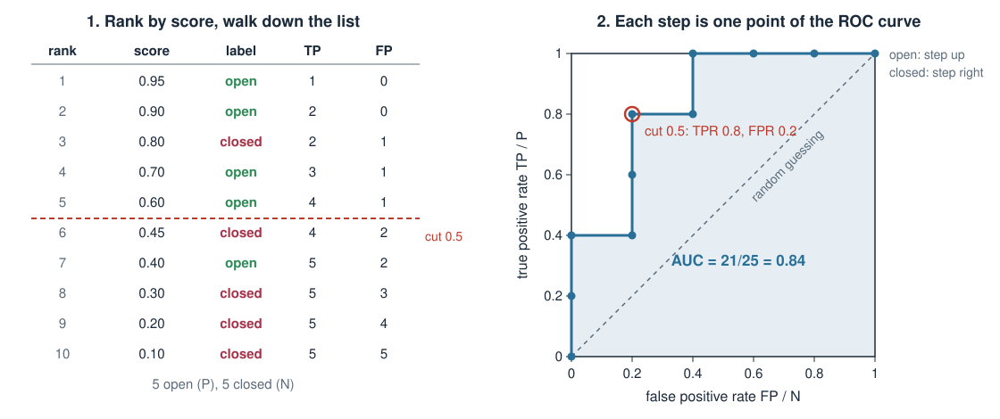
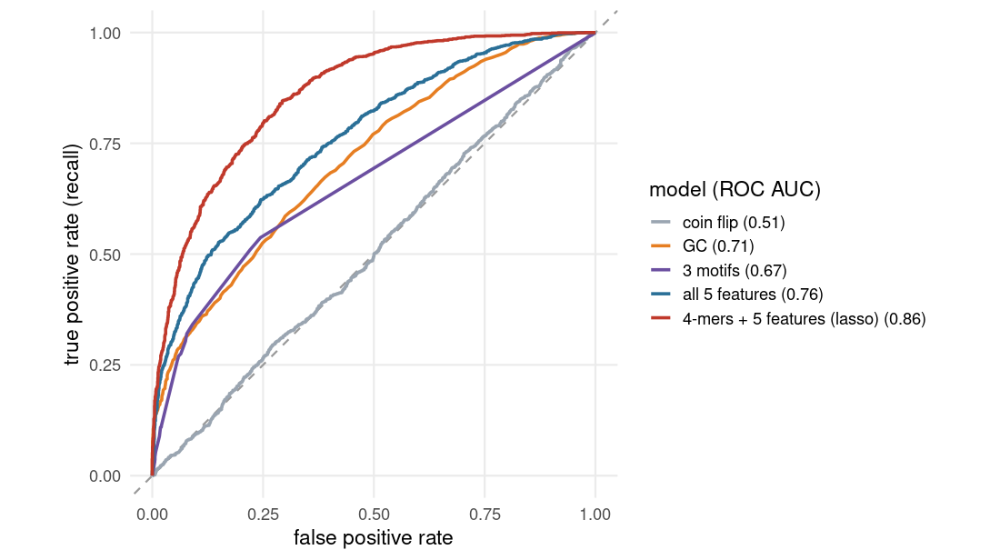
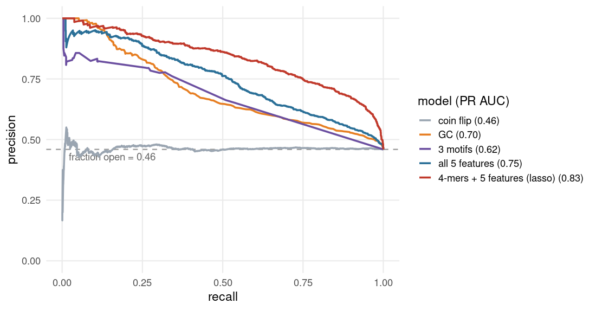
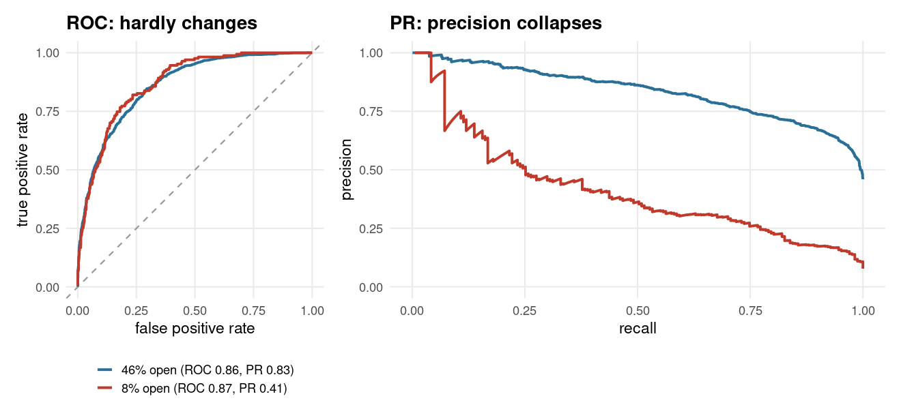
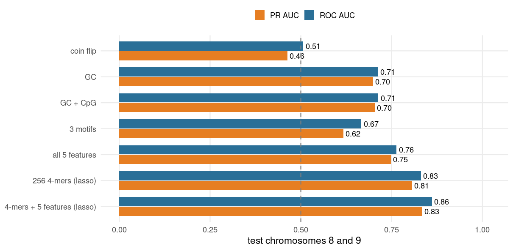
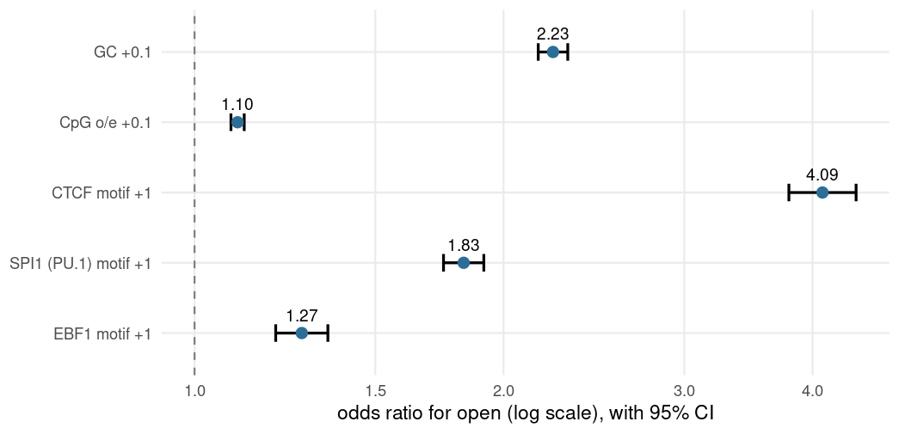
| idea | key fact |
|---|---|
| supervised learning | examples with labels → features → model parameters fitted to reproduce labels |
| logistic regression | linear score = log-odds; P = 1/(1+e^{-\text{score}}); e^b is an odds ratio |
| loss, fitting | log-loss = −log likelihood; gradient descent walks downhill; glm finds the same minimum |
| overfitting | many parameters, few examples: perfect on training, poor on new data |
| train / validation / test | fit / choose / report once; split by chromosome in genomics |
| regularisation | L2 shrinks, L1 selects (elastic net: both); λ chosen by cross-validation |
| confusion matrix | precision = TP/(TP+FP), recall = TPR = TP/P, FPR = FP/N |
| ROC AUC | P(random positive outranks random negative); 0.5 = chance; insensitive to class balance |
| PR AUC | baseline = fraction of positives; drops with imbalance; closer to real genome-wide use |
| baselines | always report the simple model (coin flip, GC, motif) next to the fancy one |
Not required reading and not examined. For those who want the primary literature.